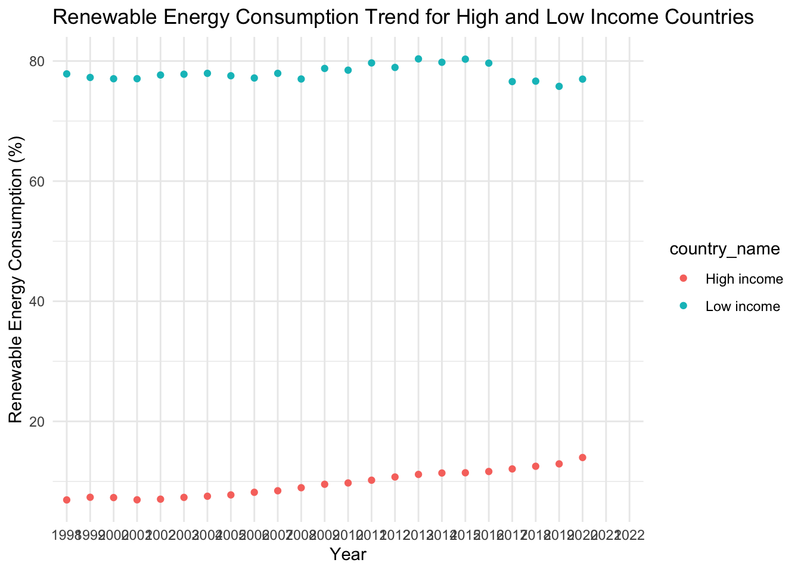
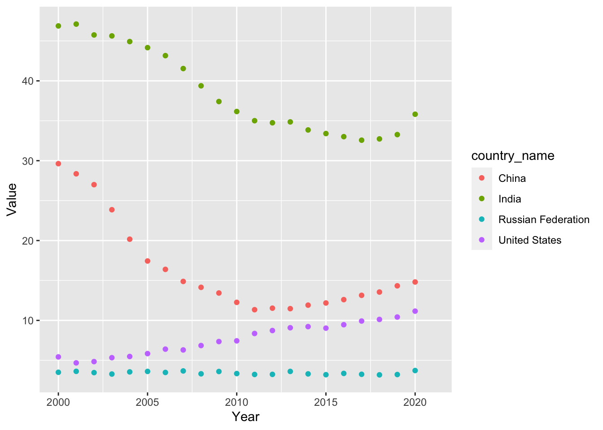
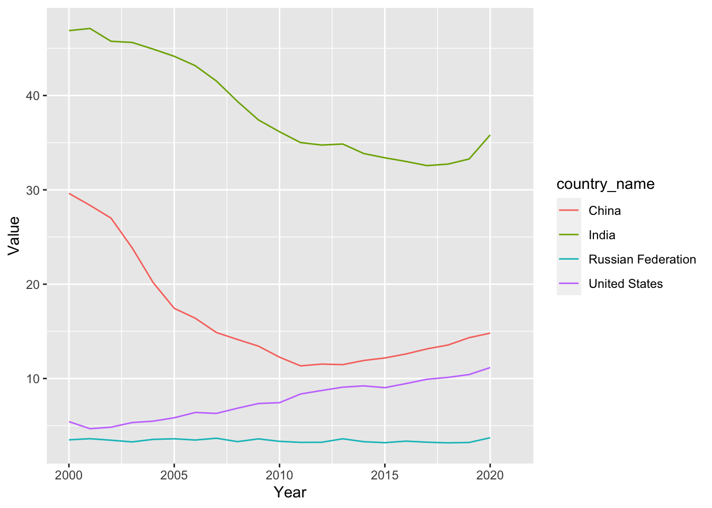

# import libraries
library(here)
library(dplyr)
library(tidyverse)
library(ggplot2)
library(janitor)
library(tidyr)
library(MASS)
library(randomForest)
library(tidyverse)
# clear environment for sanity
rm(list = ls())What is economic freedom?
I’ll be investigating economic freedom. The United States, China, Russia, and the EU will be the primary analysis of the project.
First, let’s import the libraries we will need to conduct this analysis.
Data Cleaning
Now, let’s import and clean the data containing the freedom index and other scores by country.
# read in freedom data
freedom_raw <- read.csv('data/efw_ratings.csv', header = FALSE)This data needs a good bit of clean up.
Filtering for a few countries I want to analyze will make analysis more convenient.
freedom_us_china_russia <- freedom %>%
filter(countries %in% c('United States', 'China', 'Russian Federation'))
freedom_capitalism <- freedom %>%
filter(countries %in% c('United States', 'Singapore', 'Hong Kong SAR, China', 'Switzerland', 'New Zealand', 'Australia', 'United Kingdom', 'Ireland', 'Netherlands'))
freedom_anticapitalism <- freedom %>%
filter(countries %in% c('Sweden', 'Norway', 'Finland', 'Denmark', 'France', 'Belgium', 'Austria', 'Germany', 'Italy'))This analysis will focus on 2020, as this is the most complete recent year in the dataset.
freedom_2020 <- freedom %>%
filter(year == 2020)Now, lets move on to entering the next dataset. This freedom data serves as the policy side of the data – now we want to append and compare environmental outcomes based on different political and economic factors.
# read in esg data
esg_wb <- read.csv('data/esg_wb.csv') %>%
clean_names()This data also needs to be cleaned up a bit. Let’s get to work.
column_names <- c("x1998_yr1998", "x1999_yr1999", "x2000_yr2000",
"x2001_yr2001", "x2002_yr2002", "x2003_yr2003",
"x2004_yr2004", "x2005_yr2005", "x2006_yr2006",
"x2007_yr2007", "x2008_yr2008", "x2009_yr2009",
"x2010_yr2010", "x2011_yr2011", "x2012_yr2012",
"x2013_yr2013", "x2014_yr2014", "x2015_yr2015",
"x2016_yr2016", "x2017_yr2017", "x2018_yr2018",
"x2019_yr2019", "x2020_yr2020", "x2021_yr2021",
"x2022_yr2022")
# Function to extract and convert the year part of a column name to numeric
extract_year <- function(column_name) {
year_str <- substr(column_name, 2, 5)
as.numeric(year_str)
}
first <- names(esg_wb)[1:4]
# Apply the function to each column name
numeric_years <- sapply(column_names, extract_year)
new_cols <- c(first, numeric_years)
names(esg_wb) <- new_cols
esg_wb <- esg_wb %>%
mutate(across(5:ncol(.), ~ as.numeric(as.character(.))))esg_wb_long <- esg_wb %>%
pivot_longer(
cols = '1998':'2022', # Specify the range of columns to pivot
names_to = "Year", # Name of the new column that will store the years
values_to = "Value" # Name of the new column that will store the corresponding values
)
# View the pivoted data
head(esg_wb_long)# A tibble: 6 × 6
country_name country_code series_name series_code Year Value
<chr> <chr> <chr> <chr> <chr> <dbl>
1 Afghanistan AFG Agricultural land (% of lan… AG.LND.AGR… 1998 58.1
2 Afghanistan AFG Agricultural land (% of lan… AG.LND.AGR… 1999 57.9
3 Afghanistan AFG Agricultural land (% of lan… AG.LND.AGR… 2000 57.9
4 Afghanistan AFG Agricultural land (% of lan… AG.LND.AGR… 2001 57.9
5 Afghanistan AFG Agricultural land (% of lan… AG.LND.AGR… 2002 57.9
6 Afghanistan AFG Agricultural land (% of lan… AG.LND.AGR… 2003 58.1energy <- esg_wb %>%
filter(series_name == "Renewable energy consumption (% of total final energy consumption)")
energy_long <- energy %>%
pivot_longer(
cols = `1998`:`2022`, # Specify the range of year columns as integers
names_to = "Year", # Name of the new column for years
values_to = "RenewableEnergyConsumption" # Name of the new column for values
)
water <- esg_wb %>%
filter(series_name == "Level of water stress: freshwater withdrawal as a proportion of available freshwater resources")
water_long <- water %>%
pivot_longer(
cols = `1998`:`2022`, # Specify the range of year columns as integers
names_to = "Year", # Name of the new column for years
values_to = "Water" # Name of the new column for values
)
methane <- esg_wb %>%
filter(series_name == "Methane emissions (metric tons of CO2 equivalent per capita)")
methane_long <- methane %>%
pivot_longer(
cols = `1998`:`2022`, # Specify the range of year columns as integers
names_to = "Year", # Name of the new column for years
values_to = "Methane" # Name of the new column for values
)ggplot(subset(energy_long, country_name %in% c("High income", "Low income")), aes(x = Year, y = RenewableEnergyConsumption, color = country_name)) +
geom_point() +
labs(title = "Renewable Energy Consumption Trend for High and Low Income Countries", x = "Year", y = "Renewable Energy Consumption (%)") +
theme_minimal()Warning: Removed 4 rows containing missing values (`geom_point()`).
ggplot(subset(methane_long, country_name %in% c("High income", "Low income")), aes(x = Year, y = Methane, color = country_name)) +
geom_point() +
labs(title = "Water", x = "Year", y = "Water") +
theme_minimal()Warning: Removed 4 rows containing missing values (`geom_point()`).
Ocean protection
# filtering for each series name in esg data
agricultural_land_subset <- filter(esg_wb, series_name == "Agricultural land (% of land area)")
net_forest_depletion_subset <- filter(esg_wb, series_name == "Adjusted savings: net forest depletion (% of GNI)")
coastal_protection_subset <- filter(esg_wb, series_name == "Coastal protection")
water_stress_level_subset <- filter(esg_wb, series_name == "Level of water stress: freshwater withdrawal as a proportion of available freshwater resources")
methane_emissions_subset <- filter(esg_wb, series_name == "Methane emissions (metric tons of CO2 equivalent per capita)")
renewable_energy_consumption_subset <- filter(esg_wb, series_name == "Renewable energy consumption (% of total final energy consumption)")
renewable_electricity_output_subset <- filter(esg_wb, series_name == "Renewable electricity output (% of total electricity output)")
unemployment_total_subset <- filter(esg_wb, series_name == "Unemployment, total (% of total labor force) (modeled ILO estimate)")ggplot(subset(freedom, countries %in% c("United States", "China", "United Kingdom", "France", "South Africa", "Iraq", "Serbia")),
aes(x = year, y = economic_freedom_summary_index, color = countries)) +
geom_point() +
labs(title = "Economic Freedom Index Over Time", x = "Year", y = "Economic Freedom Index") +
theme_minimal() +
theme(axis.text.x = element_text(angle=45, hjust = 1))Warning: Removed 30 rows containing missing values (`geom_point()`).
Hypothesis testing:
eu_countries <- c("Austria", "Belgium", "Bulgaria", "Croatia", "Cyprus",
"Czech Republic", "Denmark", "Estonia", "Finland", "France",
"Germany", "Greece", "Hungary", "Ireland", "Italy", "Latvia",
"Lithuania", "Luxembourg", "Malta", "Netherlands", "Poland",
"Portugal", "Romania", "Slovakia", "Slovenia", "Spain", "Sweden")
freedom_eu <- freedom %>%
filter(countries %in% eu_countries) %>%
filter(year == 2020)
freedom_wo_eu <- freedom %>%
filter(!(countries %in% eu_countries)) %>%
filter(year == 2020)# Perform T-test
t_test_result <- t.test(freedom_eu$economic_freedom_summary_index,
freedom_wo_eu$economic_freedom_summary_index,
na.rm = TRUE)
# Print the results
t_test_result
Welch Two Sample t-test
data: freedom_eu$economic_freedom_summary_index and freedom_wo_eu$economic_freedom_summary_index
t = 10.049, df = 110.52, p-value < 2.2e-16
alternative hypothesis: true difference in means is not equal to 0
95 percent confidence interval:
0.8648778 1.2897794
sample estimates:
mean of x mean of y
7.566400 6.489071 Some analysis to consider:
Comparative analysis of economic freedom scores
Correlation analysis
Regression analysis
Time series analysis
Cluster analysis
Hypothesis testing
Random forest analysis
Interaction effect